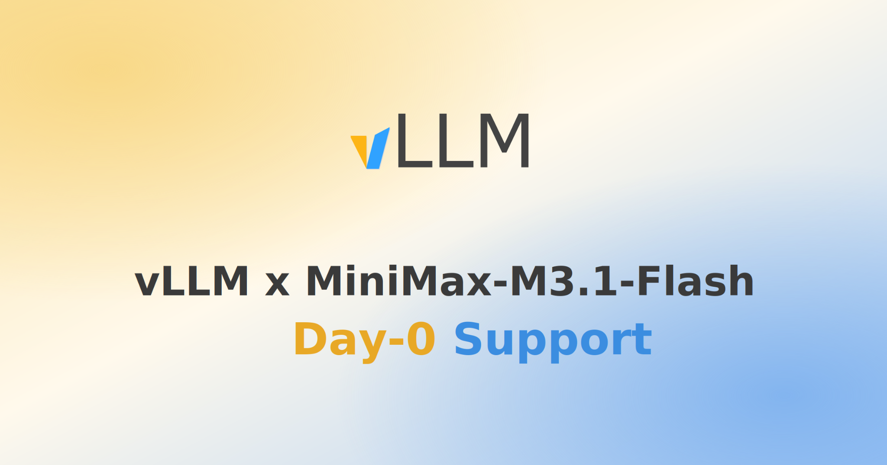
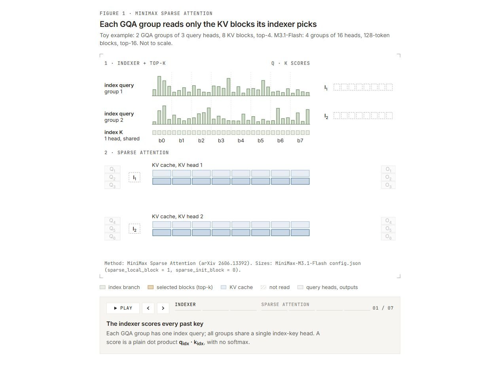
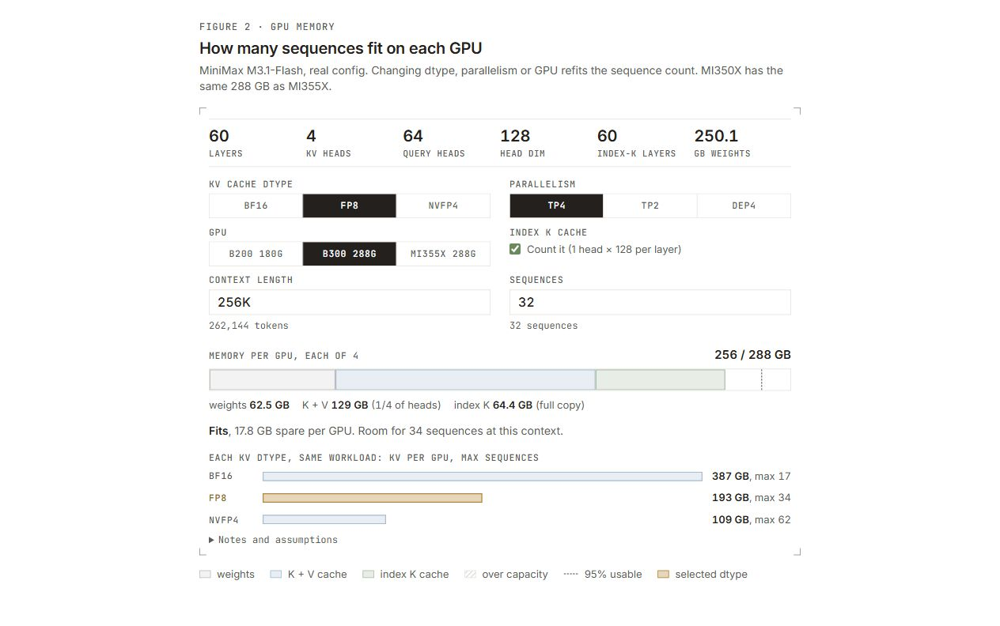
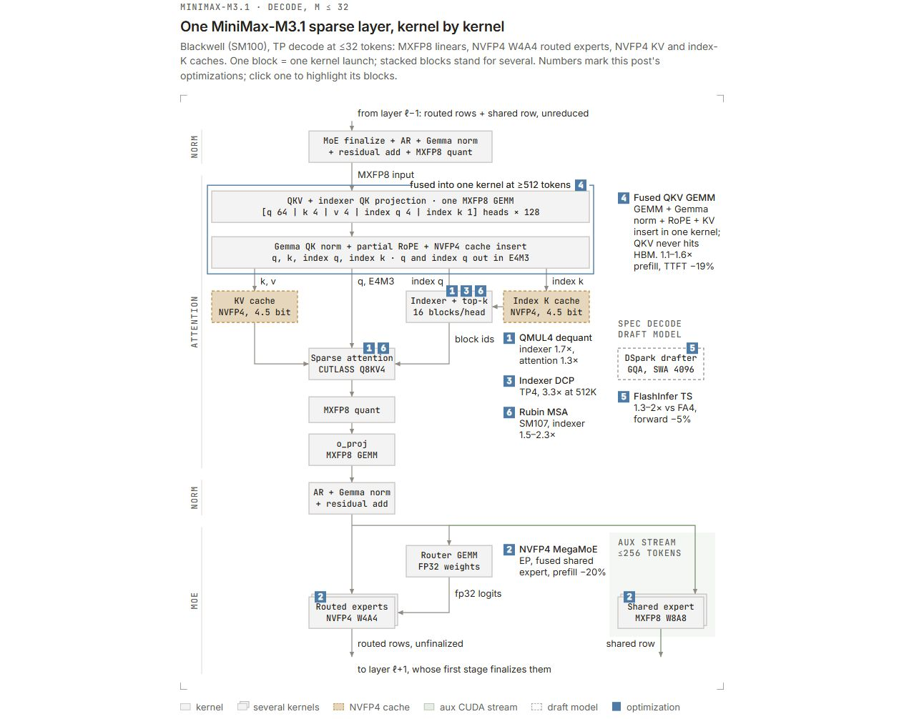
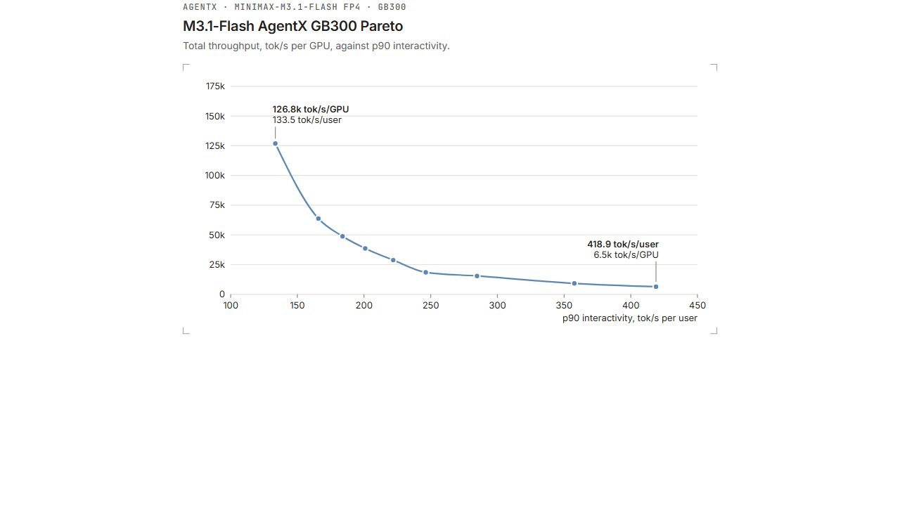
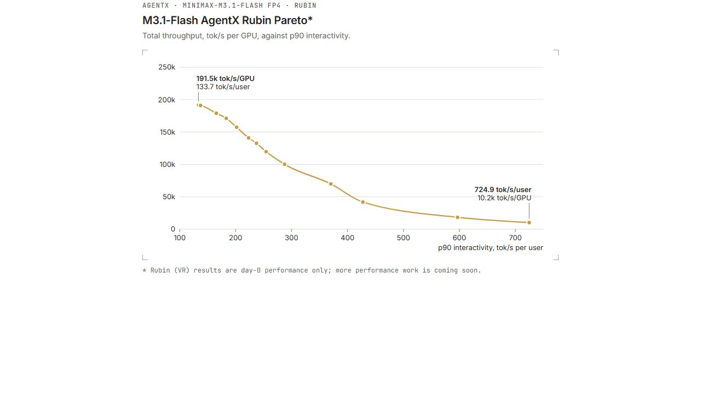
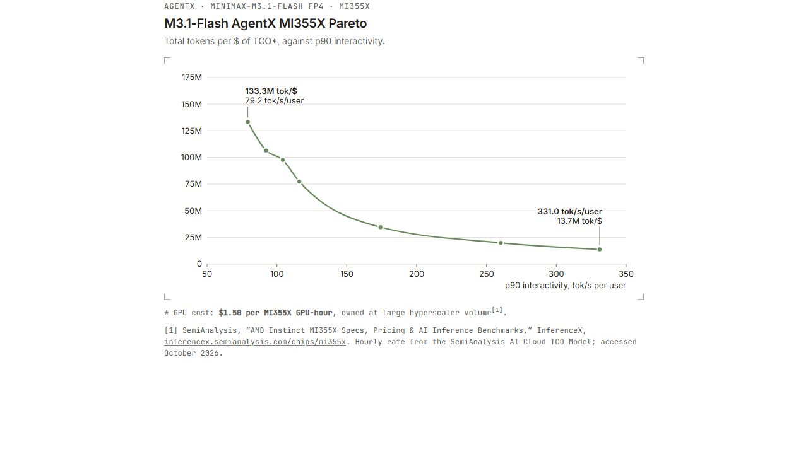
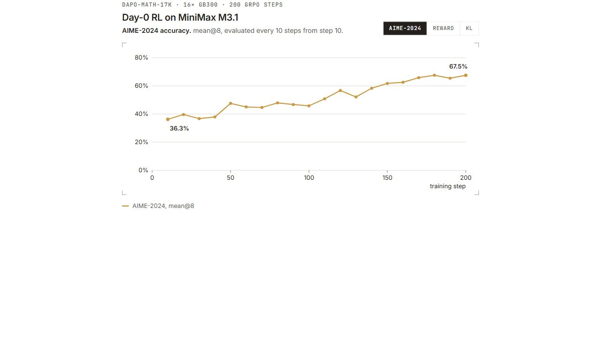

MiniMax-M3.1-Flash 是 MiniMax-M3 系列的最新模型，在推理、编程、智能体和视觉任务上均有提升。它还专门针对推理效率进行了设计，原生采用 NVFP4 KV 缓存、NVFP4 量化的 MoE 权重，以及用于推测解码的 DSpark 草稿模型。
vLLM 从发布首日即支持 MiniMax-M3.1-Flash：支持 NVIDIA Blackwell GPU、配备专用 Rubin 内核的 NVIDIA Rubin GPU，以及 AMD MI350 系列 GPU，并且在智能体工作负载上表现强劲。
要点速览
- MiniMax 稀疏注意力（MiniMax Sparse Attention，MSA）：索引器和注意力路径均采用 NVFP4 KV 缓存，同时配备 NVFP4 MoE 权重和 DSpark 草稿模型。
- Blackwell MSA 内核使用 CUDA 13.4 新增的
QMUL4指令，在内核中将 NVFP4 反量化为 FP8：索引器 QK 解码最高加速 1.7 倍，稀疏注意力解码最高加速 1.3 倍。 - NVFP4 MegaMoE 融合 MXFP8 共享专家并提前释放 TMEM：预填充阶段内核延迟降低 20%，预填充吞吐量提高 7%。
- 索引器解码上下文并行（DCP）：在 4 张 GB300、512K 上下文条件下，每个稀疏层的索引器最高加速 3.3 倍。
- QKV GEMM + 归一化 + RoPE + KV 写入融合：当输入达到 512 个及以上 token 时，预填充速度提高 1.1～1.6 倍；在 TP4 下，P50 首 token 时间（TTFT）降低约 19%。
- DSpark 草稿模型的注意力改用 FlashInfer PrimiTS 后端：比 FlashAttention 4 快 1.3～2 倍，总前向传播时间降低 5%。
- vLLM 也集成了 Rubin（SM107）MSA 内核，性能达到当前领先水平。
- AMD MI350 系列：原生 NVFP4 MSA 内核、索引器解码上下文并行、双批次重叠以及 mono 内核，使各方面性能提升 2～3 倍。
- 智能体服务：在 NVIDIA GB300 上，延迟敏感端单用户最高达到 418.9 token/s；在 NVIDIA Rubin 上，单用户最高达到 724.9 token/s，单 GPU 总吞吐量达到 191.5K token/s；在 AMD MI355X 上的 SemiAnalysis AgentX 基准中，每美元总体拥有成本（TCO）最高可处理 1.333 亿个 token。
- 首日强化学习支持：可基于 NVFP4 检查点，使用 veRL、FSDP2 和 LoRA 完成端到端强化学习。
快速开始
两个厂商平台均有预构建镜像：
- NVIDIA：
vllm/vllm-openai:minimax-m31-flash - AMD：
vllm/vllm-openai-rocm:minimax-m31-flash
请注意，相关代码经过审核并合并到上游后，模型才会出现在每夜构建的 PyPI wheel 中，这通常需要约一周。完整配置方案参见 vLLM Recipes，模型检查点位于 MiniMaxAI/MiniMax-M3.1-Flash。
NVIDIA 上的 TP4
为获得最佳性能，建议使用 CUDA 13.4 工具包。
vllm serve MiniMaxAI/MiniMax-M3.1-Flash \
-tp 4 \
--reasoning-parser minimax_m3 \
--block-size 128 \
--kv-cache-dtype nvfp4 \
--attention-config '{"indexer_kv_dtype": "nvfp4"}' \
--speculative-config '{"method":"dspark","num_speculative_tokens":7,"attention_backend":"FLASHINFER_TS","kv_cache_dtype":"fp8","draft_sample_method":"probabilistic"}' \
--disable-hybrid-kv-cache-manager
AMD 上的 TP4
vllm serve MiniMaxAI/MiniMax-M3.1-Flash \
-tp 4 \
--reasoning-parser minimax_m3 \
--block-size 128 \
--kv-cache-dtype nvfp4 \
--attention-config '{"indexer_kv_dtype": "nvfp4", "indexer_decode_cp": true}' \
--quantization-config.moe mxfp8 \
--speculative-config '{"method":"dspark","num_speculative_tokens":3,"attention_backend":"TRITON_ATTN","kv_cache_dtype":"fp8","draft_sample_method":"probabilistic"}' \
--disable-hybrid-kv-cache-manager
MSA 简介
为了提高推理效率，MiniMax-M3 模型系列用一种分块稀疏注意力变体（arXiv 2606.13392）替代了全注意力。KV 缓存被划分为每块 128 个 token。轻量级索引器为上下文中的每个 key 打分：每个 GQA 分组使用一个索引查询，对同一个共享索引 key 头进行计算，再对分数执行最大池化，得到每个分块的单一分数。随后，主注意力只对得分最高的 16 个分块进行精确计算，同时始终保留最新分块。无论上下文多长，每个查询最多只需处理 2,048 个 key。
这种设计对受内存带宽限制的解码阶段帮助最大。每一步仍然要扫描完整上下文中的索引 key，但每层每个 token 只需读取 128 字节，仅为稠密注意力所需 1,024 字节 K/V 数据的八分之一（FP8、4 个 KV 头 × 128 维）。完整 K/V 数据仅需读取被选中的 2,048 个 token。在长上下文解码中，每一步产生的 HBM 流量约为稠密注意力的 12.5%。
当前阅读器不支持 iframe 时，展开静态预览

图 1：MiniMax 稀疏注意力。每个 GQA 分组的索引器选出得分最高的 KV 分块，该组中的每个查询头只对这些分块进行精确注意力计算。可在上方本地交互图中逐步查看这一过程。
MiniMax-M3.1 架构有哪些新变化
与上一代相比，MiniMax-M3.1 显著提升了推理效率：它原生针对 NVFP4 KV 缓存进行了量化感知训练（QAT），路由 MoE 权重也以 NVFP4 格式存储。NVFP4 专家将检查点大小从 451.5 GB（MiniMax-M3-MXFP8）缩减到 250.1 GB，减小了 44.6%。NVFP4 KV 缓存每个 token 需要 34,560 字节，而 FP8 需要 61,440 字节，因此每个 token 节省 43.75%。两项优化结合后，在 4 张 NVIDIA B300 GPU、DEP4 部署和 256K token 序列下，M3.1 可容纳 76 个并发序列，而采用 FP8 KV 缓存的 M3 只能容纳 28 个，前者约为后者的 2.7 倍，从而直接提升服务吞吐量。
当前阅读器不支持 iframe 时，展开静态预览

图 2：MiniMax-M3.1 通过量化感知训练，在索引器和稀疏注意力中均使用 NVFP4 KV 缓存。可以调整 KV 缓存数据类型、并行方式、GPU 或上下文长度。
性能优化
vLLM 在多种硬件平台上都为 MiniMax-M3.1 提供了强劲性能。在 NVIDIA GPU 上，我们提供了针对 NVFP4 KV 缓存优化的内核。vllm-project/MSA 仓库包含针对不同工作负载和操作调优的内核，包括 MSA 索引器预填充与解码、稀疏注意力预填充与解码，以及 MSA 专用 top-k 内核。
当前阅读器不支持 iframe 时，展开静态预览

图 3：Blackwell 在解码阶段（M ≤ 32）运行一个 MiniMax-M3.1 稀疏解码器层时所使用的各个内核。编号标记对应本文介绍的优化；可在上方本地交互图中查看不同配置与指标。
针对 NVIDIA Blackwell 优化的 MSA 内核
KV 缓存以 NVFP4 存储，而查询仍为 FP8，因此矩阵乘法无法使用原生 NVFP4 Tensor Core 指令。内核会先将 NVFP4 KV 缓存反量化为 FP8，再执行 FP8 MMA。为了降低反量化成本，我们使用了 CUDA 13.4 新增的一条 Blackwell 专用 PTX 指令：mul.e4m3x4.e2m1x4.e4m3x4（对应 SASS QMUL4）。它使用缩放因子一次缩放 4 个 NVFP4 值，并通过一条指令生成 4 个 FP8 值。与此前需要绕经 FP16 的路径相比，这种方式所需的 CUDA Core 指令少得多。最终，索引器 QK 解码内核最高加速 1.7 倍，稀疏注意力解码内核最高加速 1.3 倍。
NVFP4 MegaMoE
MegaMoE 是现代专家并行（EP）部署的关键组成部分。我们将 DeepGEMM 的 MegaMoE 扩展到 NVFP4 精度，并融合了 MXFP8 共享专家；相关代码已在我们的分支 vllm-project/DeepGEMM 中开源。为 MegaMoE 添加 NVFP4 支持并不只是更换数据类型。与此前的 FP8×FP4 路径相比，NVFP4 将每个元素的字节数减半，并将 Tensor Core 吞吐量翻倍。如果内核其他部分不一起调整，流水线就会失去平衡。
其中一项改动是在 FC1 尾处理（epilogue）中提前释放 TMEM 阶段。此前必须等尾处理全部结束后才释放 TMEM。由于尾处理完全在寄存器中运行，这种等待没有必要：累加器载入寄存器后、任何算术运算开始前，就可以释放 TMEM。在预填充阶段，更快的 NVFP4 计算影响最为明显；这项改动将内核总延迟降低 20%，并使整体预填充吞吐量提高 7%。
NVFP4 索引器 DCP（解码上下文并行）
在低延迟服务中，每张 GPU 都需要在完整上下文上为自己负责的索引头打分。使用 4 张 GPU 时，每个索引器层都会把完整索引缓存读取 4 次。索引器 DCP 改为按上下文划分工作：每张 GPU 在四分之一的页面上为全部 4 个头打分，然后通过 NVLink 将各头在本地选出的 top-16 发送给负责该头的 GPU，由后者合并候选项，得到最终 top-16。选择结果仍然完全精确。在 4 张 NVIDIA GB300 GPU 和 512K 上下文下，每个稀疏层的索引器最高可加速 3.3 倍。
QKV GEMM + 归一化 + RoPE + KV 写入融合
过去，MiniMax-M3.1 的 QKV 和索引器投影会先把完整 QKV 张量写入 HBM，随后由第二个内核重新读取，用于归一化、RoPE 和写入 KV 缓存。我们把整条处理链融合为单个 GEMM 内核，其尾处理逐个头处理 FP32 累加器：对查询和索引查询应用归一化与 RoPE，同时把 K、V 和索引 key 量化为 NVFP4，直接写入各自缓存。QKV 张量因而完全不需要进入 HBM。在 GB300 上，包含 512 个及以上 token 的预填充批次速度提升 1.1～1.6 倍；在 TP4 下，P50 首 token 时间（TTFT）降低约 19%。
为 DSpark 草稿模型采用 FlashInfer PrimiTS
MiniMax-M3.1 使用 DSpark 作为推测解码的草稿模型，它运行采用 4,096 token 滑动窗口的非因果 GQA。此前 vLLM 使用 FlashAttention 4 运行草稿模型，但该后端没有针对解码阶段的张量形状进行优化。我们将它改为 FlashInfer 的 PrimiTS 后端。PrimiTS 比 FlashAttention 4 快 1.3～2 倍，可将整体前向传播时间缩短 5%。
NVIDIA GB300 上的智能体工作负载基准
vLLM 在智能体服务工作负载上展现了强劲性能。我们使用 SemiAnalysis AgentX 基准测试了运行在 NVIDIA GB300 上的首日镜像；基准详情参见此前的文章。在帕累托前沿的延迟敏感端，MiniMax-M3.1-Flash 的单用户速度达到 418.9 token/s。沿前沿向高吞吐方向移动时，它可在每位用户速度仍高于 200 token/s 的同时，实现单 GPU 38.6K token/s 的总吞吐量。在吞吐量端，单 GPU 吞吐量达到 153.8K token/s，约为交互性最高配置的 24 倍，同时每位用户仍能获得约 127 token/s。
当前阅读器不支持 iframe 时，展开静态预览

图 4：MiniMax-M3.1-Flash 在 NVIDIA GB300 上的 AgentX 帕累托前沿。配置使用 7 个推测 token，合成接受长度为 3.16～3.26 个 token（包含第一个 token）。可在上方本地交互图中查看不同配置与指标。
针对 NVIDIA Rubin 优化的 MSA
我们也针对 NVIDIA Rubin GPU 优化了该模型。为减少从 NVFP4 转换到 FP8 的开销，索引器将 NVFP4 直接转换为 FP16，再以 FP16 执行打分 MMA。这使反量化指令数量减少约三分之一；同时，得分能够保持精确，不再需要为了运行 FP8 MMA 而经过 E4M3 的二次舍入。
当查询数不超过 4 个时，单头索引器解码内核还会进一步优化：利用 SM107 的打包指令 fma.rn.f32x2.f16x2，每个 MMA 结果只应用一次分块缩放，而非对每个 K 值都应用一次。这也允许每个 SM 同时运行 3 个 CTA，从而隐藏更多延迟。Rubin 更大的共享内存（328 KB，Blackwell 为 228 KB）和更多 Tensor Memory 列（576 列，Blackwell 为 512 列）使其成为可能。
此外，Rubin 的 SM 数量多于 Blackwell，因此工作规划器会根据 SM 数量设置分块大小，把工作均匀分配到 Rubin 的全部 212 个 SM 上。
预填充阶段的稀疏注意力也受益于局部性域优化。我们通过 CUDA 虚拟内存 API 分配局部结果缓冲区，使 2 MB 页面在两个局部性域之间交替分布；组合内核会把每个分块交给其数据所在域内的 SM 所运行的 CTA。在 Rubin 上，预填充和解码注意力内核使用 K=64 的稠密 FP8 MMA 指令，使 MMA 指令数量减半，并以 Blackwell 两倍的 FP8 速率运行。
NVIDIA Rubin 上的智能体工作负载基准
在相同基准下，NVIDIA Rubin 上的 MiniMax-M3.1-Flash 将前沿进一步向外推进。在延迟敏感端，单用户速度达到 724.9 token/s。沿前沿向高吞吐方向移动时，它能在每位用户速度仍高于 200 token/s 的同时，实现单 GPU 157.3K token/s 的总吞吐量。在吞吐量端，单 GPU 达到 191.5K token/s，同时每位用户仍能获得约 134 token/s；在相同的单用户速度下，这一性能约为 GB300 的 1.5 倍。
当前阅读器不支持 iframe 时，展开静态预览

图 5：MiniMax-M3.1-Flash 在 NVIDIA Rubin 上的 AgentX 帕累托前沿。可在上方本地交互图中查看不同配置与指标。
AMD GPU 支持
在 AMD GPU 上，我们同样加入了 NVFP4 KV 缓存支持，使 AMD 部署也能利用低精度格式降低 KV 缓存的内存占用。解码方面，我们加入索引器 DCP 以加速长上下文解码，并使用 mono 内核加速低延迟推理。预填充方面，序列并行和双批次重叠减少引擎内部通信；新的 KV 缓存布局允许每个 KV 分块通过一次传输移动到解码节点。MSA 和 mono 内核使用 AMD 的 GPU 内核 Python DSL FlyDSL 构建，并获得了 FlyDSL 团队的协助。
NVFP4 MSA 内核
MiniMax-M3.1 的主注意力和索引器均使用 NVFP4 KV 缓存进行量化感知训练，但 CDNA4 没有用于反量化 NVFP4 的原生指令。为了保持 MSA 内核的高性能，我们把反量化转换为查表操作。E4M3 缩放值只有 256 种可能，E2M1 幅值只有 8 种，因此可以预先计算所有缩放后的值，并在舍入为 FP8 后存入 LDS 中一张 2 KB 的表。随后，一条 v_perm_b32 字节置换指令加一条处理符号位的 XOR 指令，就能把 4 个 FP4 值转换为 FP8。对于最多 64 个共享同一前缀页面的请求，内核还只需对该页面反量化一次。与先把选中的分块转换为 FP8、再运行 FP8 注意力内核的方案相比，这些改动使稀疏解码注意力最高加速 2.5 倍。
NVFP4 索引器 DCP
AMD 和 NVIDIA 使用相同的索引器解码上下文并行方案，而在 CDNA4 上还能获得额外收益。没有 DCP 时，TP4 中的每张 GPU 都要在完整上下文上为自己的索引头打分，因此索引缓存会被读取 4 次，矩阵计算核心也无法得到充分利用。DSpark-3 的一个解码步骤对每个请求只有 4 个查询行，只能填满 16×16×128 FP8 MFMA 的 16 列中的 4 列。采用 DCP 后，每张 GPU 在四分之一的上下文上为全部 4 个头打分，4 个头 × 4 行正好填满全部 16 列。
单个内核会交换索引查询，为本 GPU 负责的分块打分，并通过 Infinity Fabric 将每个头的分数直接写入负责该头的 GPU 内存。设备端握手机制保证这一流程可在 HIP 图中正常工作。负责该头的 GPU 随后照常选择 top-16；由于分数与单 GPU 版本逐位完全一致，选择结果也是精确的。在 4 张 MI355X 上，对 45 个长度为 30K～210K token 的请求，每个稀疏层的索引器最高可加速 2.8 倍。
SP + DBO 预填充与单次读取 KV 传输
在 TP4 下，MI355X 处理长提示词时的预填充性能受通信限制，包括节点内 GPU 之间的通信，以及预填充节点与解码节点之间的通信。在引擎内部，双批次重叠（DBO）把张量并行集合通信隐藏在另一个微批次的计算之后。序列并行（SP）则直接减少通信量：每张 GPU 保留四分之一的 token；注意力输出以 MXFP8 进行全互换，使每张 GPU 能够在本地 token 上运行完整的 o_proj；MoE 输出则执行 reduce-scatter。这使每层每个 token 的单 GPU 通信量从约 36 KB 降至 20 KB，并且归一化、量化和路由器只需处理四分之一的 token。
只有 KV 缓存也能快速到达解码节点，更快的预填充引擎才有意义。vLLM 逐层存储的 KV 缓存布局会把每个 KV 分块拆散到 125 个小页面中，每个页面都需要单独进行一次 NIXL RDMA 读取。我们将其改为“分块在外层”的布局，把每个分块存入一行连续的 1.82 MB 空间，使 NIXL 能够通过一次读取完成传输。引擎和 KV 传输改动结合后，在 4 张 MI355X 上，包含 16K 及以上 token 的预填充批次速度提高 1.8～2.1 倍。
低延迟 mono 内核
在低并发条件下，AMD GPU 的解码性能受内核启动限制：启动内核的开销比实际计算耗时更长。Mono 解码通过一次 FlyDSL 内核启动运行一个完整的稀疏 MoE 解码器层来解决这一问题。这一次启动涵盖从 QKV 投影、稀疏注意力到张量并行 all-reduce 和 MXFP4 MoE 的全部操作，取代了约 1,170 次内核启动。在采用 TP4 的 MI350X 上，解码步骤最高加速 2.3 倍，并使低并发时 8K 输入、1K 输出配置的吞吐量翻倍。在一条智能体编程任务轨迹上，交互性提高了 50%～65%。
AMD MI355X 上的智能体工作负载基准
AMD 实现也具有很强的单位成本性能。在 InferenceX AgentX 基准中，MiniMax-M3.1-Flash 在帕累托前沿的延迟敏感端达到单用户 331.0 token/s。沿前沿向高吞吐方向移动时，它能在每位用户速度仍高于 170 token/s 的同时，实现每美元 TCO 3,460 万个 token 的总处理量。在成本效率最高的一端，每美元可处理 1.333 亿个 token，接近交互性最高配置的 10 倍，同时每位用户仍能获得约 79 token/s。
当前阅读器不支持 iframe 时，展开静态预览

图 6：MiniMax-M3.1-Flash 在 AMD MI355X 上的 AgentX 帕累托前沿，以每美元 TCO 可处理的总 token 数表示。c1 和 c4 使用 7 个推测 token，合成接受长度为 3.2 个 token；其他数据点使用 3 个推测 token，接受长度为 2.45 个 token。可在上方本地交互图中查看不同配置与指标。
首日强化学习支持
我们从 MiniMax-M3.1 的 NVFP4 检查点开始进行强化学习，只训练秩为 32 的 LoRA 适配器。veRL 训练器使用与推理引擎相同的方式量化基础模型：路由专家采用 NVFP4，其他投影采用 MXFP8；每一步完成后，只把适配器同步到推理引擎。推理引擎一侧，专家 LoRA 在 FlashInfer 的 TRTLLM NVFP4 MoE 内核内部运行，因此基础专家仍可使用正常的服务内核。
训练开始前，我们从三个方面验证了训练器和推理引擎的一致性：引擎准确接收到训练器发送的权重；两者把每个 token 路由到相同的专家（路由重放）；两者为相同 token 分配的对数概率（logprob）彼此接近。
剩余差异通过 token 级重要性采样（TIS）修正，重要性比率上限设为 2。由于每个批次只执行一步优化，训练器直接把 rollout 的对数概率作为旧对数概率，从而省去为重新计算这些值而进行的额外前向传播。
在 16 张 GB300 GPU 上使用 DAPO-Math-17K 进行训练时，经过 200 个 GRPO 步骤，AIME-2024 准确率从 36.3% 提升至 67.5%。同一训练过程中，训练奖励从 −0.06 升至 0.67，而训练与 rollout 之间的 KL 散度始终保持较低水平，从 0.040 降至 0.024。
当前阅读器不支持 iframe 时，展开静态预览

图 7：使用 veRL 在 DAPO-Math-17K 上对 MiniMax-M3.1-Flash 进行首日强化学习（16 张 GB300，200 个 GRPO 步骤）：展示 AIME-2024 准确率、训练奖励，以及训练与 rollout 的 KL 散度。可使用上方标签页切换不同指标。
致谢
衷心感谢 MiniMax 团队开源 MiniMax-M3.1-Flash。我们还要感谢 Inferact、NVIDIA 和 AMD 团队——包括负责 mono 内核的 Hongxia Yang，以及 Felix Marty、Andy Luo、Felix Li、Hattie Wu、Gilbert Lei 和 Peng Sun——共同实现 vLLM 对该模型的首日支持；同时感谢 FlyDSL 团队对 AMD 内核开发提供的帮助，以及整个 vLLM 社区的贡献。